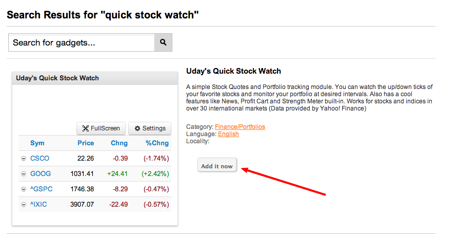
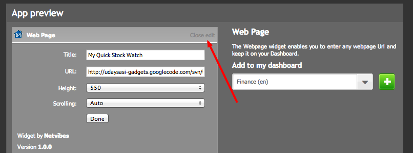
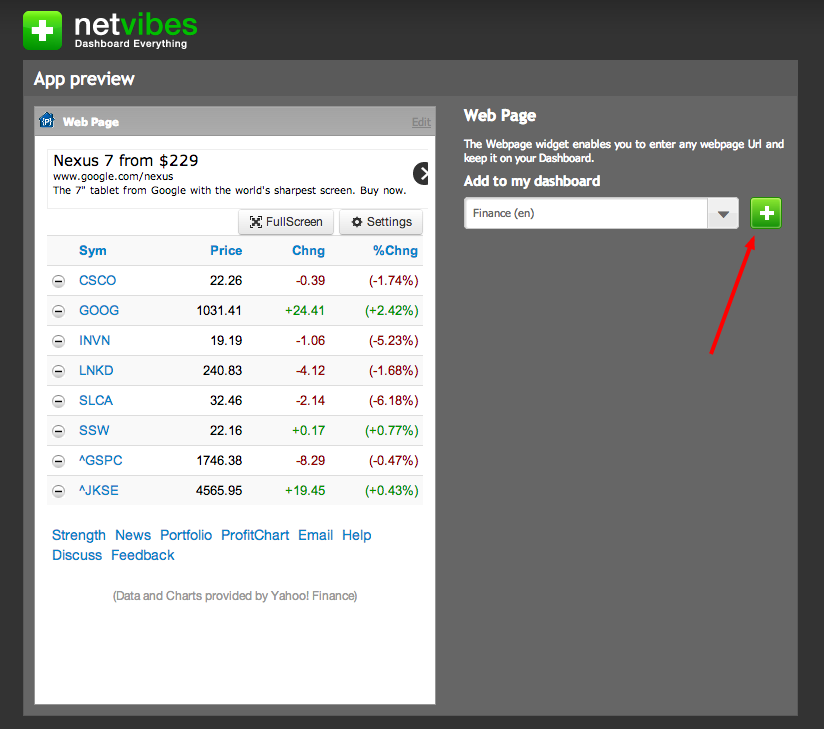

Add this gadget to Netvibes
Add this gadget to your personal webpage/blog
How to add Quick Stock Watch to igHome
Follow these steps to add this gadget to your igHome page1) Click here to search for the gadget
2) Click on the Add It Now button

3) Thats it. You can now start watching your portfolio on your Dashboard.
How to add Quick Stock Watch to Netvibes
Follow these steps to add this gadget to your Netvibes page1) Click here to launch the Add Gadget page
2) Click on the Edit Link shown below

3) Enter the title of your choice
4) Enter the following url in the URL field : http://udaysasi-gadgets.googlecode.com/svn/trunk/quickStockWatch.html
5) Enter the height of the gadget. An optimum value for this depends on the number of stock you have in your watchlist. A value of 550 or more is recommended. If you don''t set it right, dont worry. You can always change it later
6) Choose the Dashboard page you would like to add this widget to and click on the + button as shown below..

7) Thats it. You can now start watching your portfolio on your Dashboard.
How to add Quick Stock Watch to your personal webpage/blog
Do you have a Financial webpage or blog? Do you want to provide your viewers with their own version of Quick Stock Watch so they could track their portfolios? Just copy/paste the following code inside of your webpage and you will have the gadget enabled. Each user will be able to track his/her portfolio..Thank you for adding my module to your homepage. Quick Stock Watch is a simple stock tracking module that keeps you updated on the Stocks, Indices, Mutual Funds, Options, Forex Rates and Commodities you would like to monitor. You can also monitor your portfolio with minimal effort. Since I get frequent feedback asking questions about using this module, I created this Help page. Please read below to explore the module in detail.
|
Quick Stock Watch has been tested for various Stock Exchanges/Indices in the following countries :
|
Basics of Quick Stock Watch
Adding a stock : Just enter the stock symbol in the textbox provided and click Add button. Alternatively, you could just hit the Enter key. If you would like to add more than one symbol, just enter all of them seperated by either spaces or commas.
Deleting a stock : Click on the icon next to the Symbol to delete a stock from your watch list. Please note that this action deletes the symbol from the portfolio as well. Also, note that this operation is not reversible.
Editing a stock : You cannot edit a stock symbol in the watch list, but you could edit the number of shares purchased and the buy price of a stock in your portfolio view. To do this, just click on the existing numbers and make your changes.
Sorting your watchlist : The data is sorted on the Symbol when the module loads. This is to facilitate the user to look for his stock quickly. Just click on the column header(eg: Price, Chng etc) in your watchlist view and you can see the results sorted on that column. Your favorite view is just one click away.
More via Quick Stock Watch
This module works for most of the Mutual Funds in United States - excepting the Charts option. Please turn off Charts for better user experience if you would like to use this for Mutual Funds. The same applies to Options as well. To know more about a stock, just click on the name or price of a stock. Currently, this extra information is limited to a few parameters like Open and Previous Closing Prices, Volume, Day's Price Range, Year's Price Range, Exchange etc.
Some of the foreign stocks and indices do not display Charts as they are not supported by Yahoo! Finance.
You can use this module to track Forex rates too. For example, to see the Euro Currency in US dollars, please use EURUSD=X. Please note that the Forex rates are not completely supported. Most of the time, you see the change as N/A. But the Charts work fine with Forex rates.
Are you in the Commodities market? Do you want to track the prices of Oil, Metals, Grains? You can use this module to do that. Just get the symbols from here and enter them in the module. You are all set..
Click on the News link in the module to look at the most recent news stories on the stocks in your watchlist. Click on it again to hide the news section.
Click on the Email link in the module, select an option from the dropdown list and click 'Go'. The default e-mail client on your computer opens up. Send it to whoever you want by entering their e-mail address(es) in the email. This way you can share your stock picks with your friends or email your portfolio to yourself to track your progress over time. Please note that how this feature works depends entirely on your e-mail client.
Can't remember the exact symbol of a stock? Stock Finder is a new feature added to the module which lets you find the ticker symbol of a stock. This is particularly useful for Asian markets where the ticker symbols are long 6-digit numbers. If you know the name of a company and are unaware of its ticker symbol/script number, start typing the name of the stock into the textbox and Stock Finder will help you find the stock as you type. The exchange where the stock is traded is also shown so you can select the correct one. This is b'coz some of the stocks are traded in many stock exchanges all over the world. Once the results show up, just use the arrow keys on your keyboard to select the one you are interested in and hit the Enter key.
Managing and tracking your portfolio is now a snap with this module. Just click on "Portfolio" link on the module and you will be presented with a view of your portfolio. You can edit the number of shares purchased and the price paid for the stock by clicking on the existing numbers. This will allow you to edit these numbers in case you made a mistake while editing or when you buy more shares. The total gain/loss will be displayed immediately. You can switch back to the Watchlist view by clicking on the "Watchlist" link.
Profit Chart (Beta)
ProfitChart link on the module gives you the ability to view your portfolio and how each stock is doing in it. The graphical representation is a two-dimensional Pie chart that shows how your money is distributed. The sectors in the pie chart are also colored to show how a particular stock is performing. The profits are colored in shades of green. Obviously, the darker the green is, the better. On the other hand, the losses are colored in shades of red and the same shade rules apply to the losses as well. To see this feature in action, you will have to first edit your portfolio by entering the number of shares purchased and price paid for the stocks you own. Check Portfolio section for more details.
What's new?
| Feb 2nd 2007 | Modified the module to display more information about the stock. Just click on the name of a stock to view more. |
| Feb 6th 2007 | Added a 5-day chart option in the Settings section. |
| Mar 12th 2007 | Added a Strength Meter to display the performance of the stocks in your watch list at a single glance. Changed the fonts to Arial. |
| Mar 16th 2007 | How about being able to sort your watchlist according to your needs? Well, now you can!! Just click on the column header in your Watchlist view. |
| Mar 24th 2007 | Look at the most recent news stories on the stocks in your watchlist. |
| Jun 16th 2007 | Added Portfolio Tracking to the module. |
| Jul 6th 2007 | Share your watchlist or portfolio via e-mail. |
| Oct 20th 2007 | Stock Finder helps you find stocks. |
| Jan 5th 2008 | Profit Chart displays a pie chart of your portfolio. |
| Feb 29th 2008 | Added 3-month, 6-month and 1-year options under chart settings. Profit chart moved to Portfolio view |
Recommendations & Tips
- If you are using a dial-up connection with low downstream speeds, it is recommended to
turn off the Charting feature. The chart images are downloaded on-demand and hence
might eat away the bandwidth you have.
- If your screen resolution is low and you have enabled the Stock Name to be viewable, please hide the name for better user experience.
Another workaround would be to lower the Text Size from your browser's "View" menu.
Disclaimer: All the data displayed is provided by Yahoo!
Finance and I do not verify any of it. Please do not copy or use the code
for any other reason. The data could be real-time or might be delayed by few
minutes based on what you are monitoring. Refer to Yahoo! Finance for
more information.